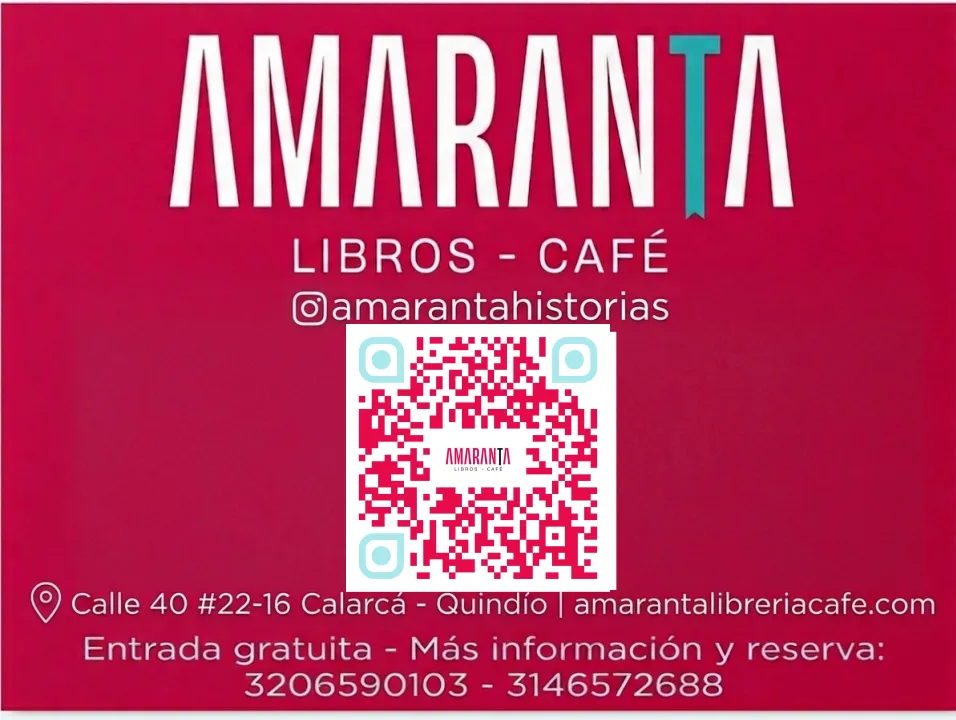

✓ VerificadoCafé Cultural · Calarcá, Departamento del Quindío
Amaranta Libros y Café
Café cultural con librería, exposiciones y los mejores cafés especiales del Quindío.
Cafés especialesLibreríaExposicionesWiFi
💰 Desde $8.000